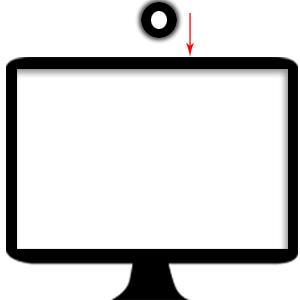
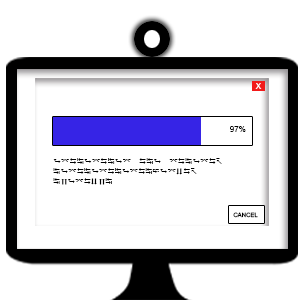
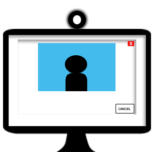

Once the drivers are installed, the Epic Eyes Tracker will automatically install the appropriate software for the webcam. The webcam will be calibrated for your eyes and height for the Epic Eyes Tracker.
After the webcam is calibrated, it will be ready to use with applications such as Skype, your favorite games, and many other applications.
Select “Epic Eyes Tracker” from the drop down menu in the appropriate application settings.
